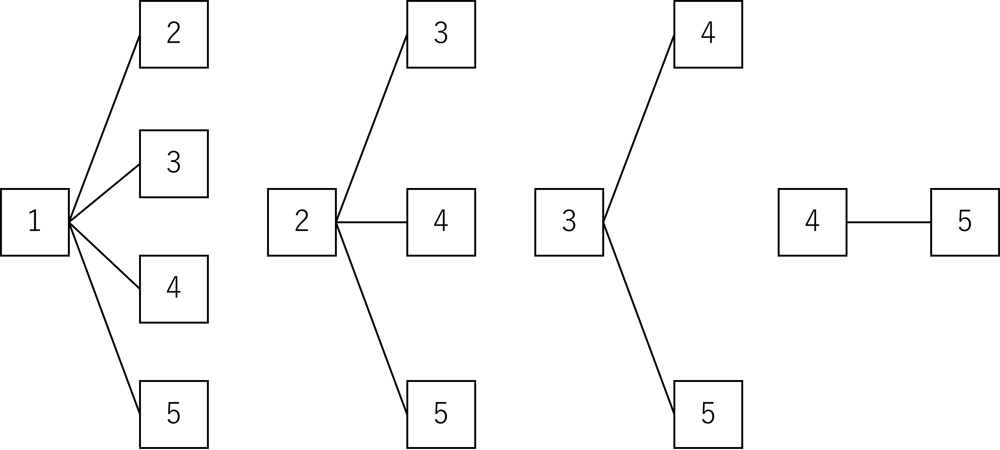

(x-3)(x+5) = x2+5x-3x-15
=x2+2x-15
各項は以下のように変形できる.
\(\sqrt{ 48 }\)=\(\sqrt{16\times3}\)=\(\sqrt{4^2\times3}\)=4\(\sqrt{ 3 }\)
\(\sqrt{ 27 }\)=\(\sqrt{9\times3}\)=\(\sqrt{3^2\times3}\)=3\(\sqrt{ 3 }\)
\(\sqrt{ 75 }\)=\(\sqrt{25\times3}\)=\(\sqrt{5^2\times3}\)=5\(\sqrt{ 3 }\)
したがって
\(\sqrt{ 48 }\)+\(\sqrt{ 27 }\)+\(\sqrt{ 75 }\)=4\(\sqrt{ 3 }\)+3\(\sqrt{ 3 }\)+5\(\sqrt{ 3 }\)=12\(\sqrt{ 3 }\)
x2-9=(x-3)(x+3)
x2-4=0
-4を移行すると
x2=4
解は右辺の平方根である
x=±2
x2+5x+6=0
左辺を因数分解すると
(x+3)(x+2)=0
右辺=0であるから以下の式が成り立つ
x+3=0
x+2=0
よって
x=-3, -2
(x+2)2=5
x+2=±\(\sqrt{ 5 }\)
x=-2±\(\sqrt{ 5 }\)
円錐の体積をV
円錐の高さをh
円錐の底面の半径をrとすると
V=\(\frac{1}{3}\)πr2h
これをhについて解くと
h=\(\frac{3V}{πr^2}\)
V=4π, r=2であるから
h=\(\frac{3\times4π}{π2^2}\)
h=3
問題の円錐は上の図のように展開できる
円の方の面積をS1とすると
S1=22π=4π
また,おうぎ形の弧の長さをlとすると円の半径に等しいから
l=4π
おうぎ形の面積をS2とすると
S2=\(\frac{1}{2}\times\)l×6=12π
よって求める円錐の表面積Sは
S=S1+S2=16π cm2
サイコロを同時に二つ投げるとき出る目は36通りある.
\(\sqrt{3ab}\)が整数になるためには自然数をnとするとab=3n2となる必要がある.
このようになるaとbの組み合わせは以下の表の通りである.
| a | b | ab |
|---|---|---|
| 1 | 3 | 3 |
| 3 | 1 | 3 |
| 4 | 3 | 12 |
| 2 | 6 | 12 |
| 3 | 4 | 12 |
| 6 | 2 | 12 |
したがってaとbの組み合わせは6通りある.
よって求める確率は
\(\frac{6}{36}\)=\(\frac{1}{6}\)
傾きが0より大きい時, xが最小値のときyが最小値, xが最大値のときyが最大値となる.
つまり直線は定義域と値域から(-1, 2),(3, 10)の2点を通る点であることがわかる.
よってy=ax+bのxとbに(x,y)=(-1, 2),(3, 10)をそれぞれ代入すると
-a + b = 2
3a + b = 10
この連立方程式を解くとa = 2, b = 4
仲田先生と桧垣教授が走った距離をそれぞれx,yとするとx+yは手賀沼1周の距離に等しい.
x + y = 18・・・➀
仲田先生が走った時間は時間＝道のり÷速さより
\(\frac{x}{21}\)
同様に桧垣教授が走った時間は
\(\frac{y}{6}\)
仲田先生と桧垣先生が走った時間は等しいから
\(\frac{x}{21}\) = \(\frac{y}{6}\)
yについて解くと
y = \(\frac{2x}{7}\)・・・➁
➁を➀に代入すると
x+\(\frac{2x}{7}\) = 18
これを解くとx = 14 km
上の図においてA + B + C = Dであるということを利用する.
その上で, 三角形にも着目すると以下の式が成り立つ
180 - (46 + 50) = 25 + 23 + x
これを解くと
x = 36°
pのx座標をy = 4x -12に代入すると
y = 4 \(\times\)5 \(-\) 12 = 8
よってPのy座標は8である.
したがって直線mはA(-3, 0)とP(5, 8)を通る直線である.
y = ax + b に(x, y) = (-3, 0), (5, 8)を代入すると
-3a + b = 0
5a + b = 8
上の連立方程式を解くとa = 1, b = 3
よって求める直線の式は
y = x + 3
Pからx軸に下した垂線とx軸との交点をDとする.
△ABPの底辺の長さをb, 高さをhとすると, 高さhはPDの長さに等しい. h=8である.
また, bの長さはABの長さに等しく. これはBのx座標を求める必要がある
点Bはy = 4x -12とx軸の交点であるから
0 = 4x -12
x = 3
よって点A, Bのx座標からABの長さは6である.したがって求める△ABPの面積Sは
S=\(\frac{1}{2}\times6\times8=24\) cm2
求める直線は点Aと点Pと点Cの中点を通る直線である.
点Pと点Cの中点を点Mとすると
M(\(\frac{5+0}{2}\),\(\frac{8-12}{2}\))=M(\(\frac{5}{2}\),-2)
よって求める直線をy = ax + bとすると点A(-3, 0)とM(\(\frac{5}{2}\),-2)を通るから以下の式が成り立つ
-3a + b = 0
\(\frac{5}{2}\)a + b = -2
上の連立方程式を解くとa = \(\frac{-4}{11}\), b=\(\frac{12}{11}\)
よって求める直線の方程式は
y = \(\frac{-4}{11}\)x + \(\frac{12}{11}\)
四角形ABCDは正方形であるから
CD = CB
よって△CDBは二等辺三角形である
ゆえに
\(\angle\)DBC = \(\angle\)BDC・・・➀
BD//EGより同位角が等しいから
\(\angle\)DBC = \(\angle\)GEC・・・➁
\(\angle\)BDC = \(\angle\)EGC・・・➂
➀に➁と➂を代入すると
\(\angle\)GEC = \(\angle\)EGC・・・➃
➃より△CGEの2つの底角が等しい
よって△CGEは二等辺三角形である
仮定より
AB = HD・・・➀
\(\angle\)ABE = \(\angle\)HDG = 90°・・・➁
辺DG, 辺BEについて
DG = DC - GC・・・➂
BE = BC - EC・・・➃
四角形ABCDは正方形であるから
BC = DC・・・➄
△CGEは二等辺三角形であるから
GC = EC・・・➅
➂～➅より
BE = DG・・・➆
➀と➁と➆より
二組の辺とその間の角が等しいから
△ABE ≡ △HDG
12を8で割った余りは4であり, 答えは4
Hに対応するのは8で割ったとき余りが7になるときである. つまり答えは7
カードを同時に選ぶことから同じ数字を選ぶことができないことに注意して樹形図を描くと以下のようになる
上の樹形図から答えは10通りである.
1と2のカードを選んだとする.このとき作ることができる数字は12か21の2通りである.
ゆえにカードの選び方10通りに2通りの数字の作り方があるため答えは10×2=20通りである.
Hに止まるためには先ほどの(1)の(b)の回答から, 作った数字が8で割ったとき余りが7である必要がある.
だからと言って, 最後の問題で残り時間が少ない中で20通りある数字の中から8で割ったとき余りが7である数字を見つけるのは面倒である.
そこで先に8で割ったときに7余る数を求める.
整数をnとすると8で割ったとき7余る数は
8n+7
とおける.カードからできる数字は2桁の自然数であることからn = 1, 2, 3, ・・・と順に代入すると
15, 23, 31, 39, 47, 55
この中から15, 23, 31がカードを選んで作ることができる数字であり, 3通りある.
したがって求める確率は
\(\frac{3}{20}\)